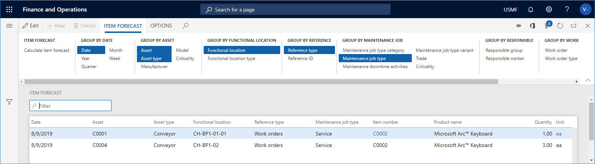

Artikelprognose berechnen
Important
Dynamics 365 for Finance and Operations hat sich zu speziell entwickelten Anwendungen entwickelt, mit denen Sie bestimmte Geschäftsfunktionen verwalten können. Weitere Informationen zu diesen Änderungen finden Sie im Dynamics 365-Lizenzierungshandbuch.
Ebenso wie Sie Kapazitätsauslastungsberechnungen durchführen können, die im vorherigen Abschnitt beschrieben sind, können Sie Artikelplanungsberechnungen durchführen für
- Wartungszeitplanpositionen
- Arbeitsaufträge, die noch nicht geplant wurden
- Geplante Arbeitsaufträge
Dies ist hilfreich, wenn Sie einen Überblick über den erwarteten Artikelverbrauch (Ersatzteile sowie andere Artikel, die für die Ausführung von Arbeitsaufträgen erforderlich sind) während einer bestimmten Periode erhalten möchten. Die Berechnung der Artikelplanung kann für alle oder ausgewählte Anlagen ausgeführt werden. Sie können eine Berechnung auch für eine Wartungsausfallzeitaktivität (Alle Wartungsausfallzeitaktivitäten oder Aktive Wartungsausfallzeitaktivitäten) oder für einen Arbeitsauftragspool (Alle Arbeitsauftragspools oder Aktive Arbeitsauftragspools) vornehmen.
Klicken Sie auf Anlagenverwaltung > Abfragen > Artikelplanung oder Anlagenverwaltung > Allgemein > Arbeitsauftragspools > Alle Arbeitsauftragspools / Aktive Arbeitsauftragspools > Arbeitsauftragspool in der Liste auswählen > Schaltfläche Artikelplanung oder Anlagenverwaltung > Allgemein > Wartungsausfallzeitaktivitäten > Alle Wartungsausfallzeitaktivitäten / Aktive Wartungsausfallzeitaktivitäten > Wartungsausfallzeitaktivität in der Liste auswählen > Schaltfläche Artikelplanung.
Wählen Sie im Dialogfeld Artikelprognose berechnen eine Periode für die Berechnung in den Feldern Startdatum/-uhrzeit und Enddatum/-uhrzeit aus.
Wählen Sie „Ja“ auf der Umschaltschaltfläche Wartungszeitplan einbeziehen aus, wenn Sie Wartungszeitplanpositionen in die Planungsberechnung einbeziehen möchten.
Wählen Sie „Ja“ auf der Umschaltschaltfläche Arbeitsauftrag einbeziehen aus, wenn Sie Arbeitsauftragspositionen in die Planungsberechnung einbeziehen möchten.
Sie können das Feld Ebene verwenden, um anzugeben, wie detailliert die Artikelplanungspositionen bezüglich funktionaler Standorte sein sollen.
Wenn Sie beispielsweise die Zahl „1“ im Feld einfügen und eine funktionale Standortstruktur auf mehreren Ebenen haben, werden alle Wartungszeitplanpositionen und Arbeitsaufträge für einen funktionalen Standort auf der höchsten Ebene angezeigt, und daher werden die Stunden in einer Position von den funktionalen Standorten auf einer niedrigeren Ebene hinzugefügt.
Wenn Sie die Zahl „0“ im Feld Ebene eingeben, wird ein detailliertes Ergebnis mit allen Wartungszeitplanpositionen und allen Arbeitsaufträgen für alle funktionalen Standortebenen angezeigt, denen sie zugeordnet sind.
Klicken Sie auf OK, um die Berechnung zu starten.
In den Gruppen Gruppieren nach… klicken Sie auf die entsprechenden Schaltflächen, um die erforderliche Detailebene der Berechnung anzuzeigen. Im Screenshot unten werden die ausgewählten Gruppieren nach-Schaltflächen in blauer Farbe hervorgehoben. Klicken Sie auf eine Schaltfläche, um sie zu aktivieren oder zu deaktivieren.
Klicken Sie auf die Schaltfläche Dimensionen anzeigen, wenn Sie das Produktdimensionen, die Lagerdimensionen oder die Rückverfolgungsangaben anzeigen möchten, die Artikeln zugeordnet werden. Aktivieren Sie die relevanten Kontrollkästchen, und klicken Sie auf OK.
